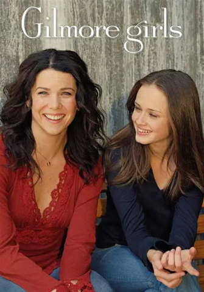

What is your name and how do you pronounce it?
My name is Abigail Fajardo. I'm pretty sure that it is just pronouced the way that it's spelt. Some people have mispronounced my last name, but i'm not sure how to explain the pronounciation.
What do you enjoy doing AT school?
While I am at school, I enjoy learning new things and making new friends. This usually happens at the beginning of the school year.
What do you enjoy doing OUTSIDE of school?
Outside of school, I enjoy reading books and watching Netflix. My favorite tv show on Netflix is Gilmore Girls. It is a show that was made back in the 2000's.

What grade will you work to get in this class this year?
This year, I will work very hard to get an A in this class.
What is your most favorite place you've been to?
My most favorite place that i've been to is Salt Lake City, Utah. I love going to Utah to visit my relatives. If I was able to move to another state here in the U.S, it would definetely be somewhere in Utah. I haven't had the chance to experience how bad the weather conditions get during the winter times, but I would love to someday even if I end up hating it.

Where is the one place you haven't been but you'd like to go?
One place that I haven't been but I would like to go to is New York. I have always wanted to visit New York and luckily we have a trip planned there this November. We will be staying there for a full week and I am definetely looking forward to it.

What is your favorite sport or board game or card game to watch or play?
My favorite sport to play is volleyball but my favorite sport to watch is american football. My favorite team is the Kansas City Chiefs.
What do you want to do when you grow up?
When I grow up, I want to be a registered nurse. I have always wanted to work in the medical field and I think that the right job for me is a nurse. They have flexible schedules and they don't have a hard job, at least not as hard as a surgeons job.